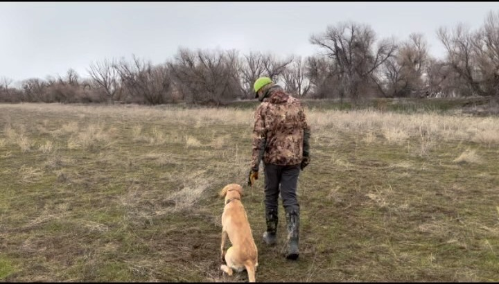

Episode 13 · August 26, 2023 · 2022
Handling & Blind Retrieve Training - The icing on the cake of a finished hunting dog.

About This Episode
In episode 013 we talk about handling a dog. Why we teach a dog to handle, the benefits and some information about the commands of handling and a bunch of other cool things. Hope you all enjoy and thanks again for listening!
Questions about the training topics in this episode? Tyce works with bird dog owners and hunters through Utah Bird Dog Training. Reach out to work with him directly.
Resources & Links
- Utah Bird Dog Training — Tyce's professional training services.
Transcript
Full transcript for Episode 13: Handling & Blind Retrieve Training - The icing on the cake of a finished hunting dog..
Tyce
Hey folks. Welcome to the Bird Dog Podcast. My name is Tys Erickson. I will be your host.
This evening is when I'm actually recording this podcast. But better late than ever. if you're wanting to follow us, go ahead and jump on Instagram. You can follow us at the Bird Dog Podcast on Instagram. You can dmm us or, leave us comments there or questions, and we will try to answer them in future episodes.
You can also email us at the BirdDog podcast@gmail.com. And we'll try to respond to any questions we get via email. appreciate you taking some time to listen to this podcast. Hope it will help you out. Hopefully it'll be rewarding and you can learn something from this podcast. the podcast that I wanted to talk about or the topic I wanted to talk about, this evening is handling or blind retrieve.
Training. So let me start off with a story. a friend and I were Hunting and I had one of my, trustee black lab retrievers with me, and we were up duck hunting and, some redheads came into our decoys, on the river. And as they were coming in, We pulled up and shot at the birds and one of them sailed clear off across the river and into the bushes. this river was a good, probably a hundred yards across, and then the bird was another 30, 40 yards up into the brush. My friend who was newer to hunting and hadn't really been with me, just said, if you can get your dog to pick up that bird, I'll be amazed or something along those lines. you know, I said, well, let's see what we can do.
So we lined the dog up, sent the dog and was able to guide that dog all the way across that river, and the dog hadn't seen the bird go down. I can't remember why. If the dog happened in the truck or was in the bushes or whatever it may be, maybe it saw other birds. This was some years ago, so I don't remember the exact details.
But I was able to handle that dog. It ended up drifting. You know, down river with the current probably a hundred yards. By the time it reached the opposite shore, then I was able to handle or cast the dog along the shoreline, and then away from me back up into the bushes, to the bird.
The dog then grabbed the bird and then brought the bird all the way back across the river and put it in my hand. So it was a beautiful redhead. Drake. It was banded.
No, I'm just kidding. It wasn't banded, but that would've made the story even that much better. But it was just beautiful plumage. It hadn't been hit that hard and my friend was just like, that was awesome.
And it really is awesome when you can teach a dog. To do that or handle a dog to a bird. So I wanna talk about handling and exactly what that is and what that kind of entails and kind of break it down. a lot of people don't know what handling or blind retrieve training is. That's another verbiage for it.
And, handling is basically guiding or assisting the dog to a bird that it. Generally does not know that is there. So handling is different than marks. So basically when you're hunting waterfowl or hunting upland game, you can also use handling when you're doing upland game, but when you're hunting waterfowl, It's made up of marks and blind retrieves.
So a mark is something that the dog sees to go down. So it marks the bird. It sees the bird. Let's say you're hunting some decoys or pass shooting or whatever it may be.
And a duck comes into the decoys or comes by and you shoot it, the dog sees that bird go down. That is called a mark. And basically what we do on that, we're gonna send the dog on its name to go make the retrieve. So you're gonna say, Sally, Joey, whatever it may be.
And that dog's gonna be released essentially to swim out there. Grab the bird and come back and hopefully put it in your hand. but when you're hunting, a lot of times be jump, shooting, decoy, whatever it may be. There's a lot of birds that the dog does not see go down. Maybe the dog's in the boat, maybe it's in the blind, where it just does not see it or it just happens not to look in that direction or whatever it may be.
And you need to guide the dog from point A to point B. So you need to get the dog from you to the bird. and handling is one way to do it. If a dog does not handle, you can obviously try to line the dog, point the dog in the direction, and send the dog, and hopefully that dog. You know, has enough, faith in you, or you've built that trust that the dog can go in that direction and eventually it's gonna see that bird or smell the bird and grab it and pick it up.
That takes work. And obviously practice and lining is part of handling. But if the dog does not know truly how to run blinder trees or handle, that's gonna be something you can try to do. another thing would be is to walk out there and, tell the dog to hunt 'em up or find the bird or whatever command you like to use. That's the search command.
The dog starts searching around. Dog smells, the bird gets down, wind of it, sees it, grabs the bird, brings it into you. step three or maybe option C would be to do the old, throw a rock out there, dog sees a splash, send the dog on its name, it drives out there, sees the bird grabs it and picks it up. Just kind of getting its attention to that area. Those are off the top of my head right now.
Those, the only, the three ways I can think of getting a dog from point A to point B would be lining the dog, walking the dog out there or throwing something out there, and hopefully the dog gets the bird and gets it back in your hand. But step four or number four, Your best option is going to be to teach the dog to handle or run blind retrieves. It's a beautiful thing. It's a lot of teamwork, super fun to do. takes quite a bit of time and it's kind of the icing on the cake. but it's a super fun process.
Let's talk about how long it takes to teach a dog to handle so, When you teach a dog to handle, first and foremost, it needs to have a foundation when it comes to training, we personally like to, when we teach a dog to handle, they've gone through what we call our foundation training. That's gonna be a dog that's basically hunting, but does not handle at that point. So dogs can be okay, obviously with. Guns, it's gonna be excited about birds.
It's gonna have all of its obedience work done. 'cause you're gonna have to control the dog when you're handling. And then, we like the obedience overlaid with all the eco. We like the dog force fetched. We like the dog steady.
So the dog will sit there and you can send the dog on its name to go make a retrieve. So it's basically a marking dog. It's kind of a junior hunter. A k C level type hunting dog, A dog that will sit there, you can throw it someone, or you can shoot a duck, you can send the dog, it's gonna release out there, it's gonna go pick up that duck, ideally out to a hundred, 150 yards, somewhere around that range.
Just a single retrieve is fine. And then a dog that's also been force fetched or the trained retrieve or the conditioned retrieve, whatever you wanna name it. But basically, Teaching the dog to retrieve on command, your obedience is really gonna control. The body of the dog and the force fetch is gonna control the mouth of the dog.
So we gotta have these things covered in order to continue to build on this foundation. So with our training program, usually it's around. Four to five months of training to do the foundation work, and then to do the advanced work or the handling work. It's usually another roughly four months of training to do the handling work.
So you gotta have the first half done. If you try to teach the dog to run blinded trees and the foundation is not built into the dog, generally your cards are gonna fall. Your foundation's gonna crumble and you're gonna. truly not have a dog that runs blind retrieves. You may be able to have a dog that can cast, you can directionally kind of move the dog.
But it's not gonna be a true handle or a true blind retrieve. So when I was a young kid, my first dog, that's kind of the way it was. It was more of a dog that, hey, I could kind of get its attention if it didn't know where the bird was and it was hunting around there, and I could point to the right or left, tell the dog over, and it would go in that direction and I could kind of assist it. In helping it find birds, but the dog already had to be over there in that area, wasn't super clean.
Wasn't super pretty. And so again, that's just more directionally casting. It's better than nothing. But truly teaching a dog to handle around blinder trees is a beautiful thing.
And again, it just takes, some time. So now let's kind of talk about the commands that you'll use. when you have a dog that's running blinder trees, generally you're gonna send the dog on the back command. So when the dog. Is going out for retrieve or a marked retrieve that it sees you are gonna send it on its name.
Let's kind of backtrack why we send it on its name. The reason we send it on its name is ideally if you're hunting with a buddy or you're in a hunt test and the dog is honoring you, release the dog's on its name, so hopefully your buddy's dog doesn't have the same name as your dog. and basically what you're gonna do is you're gonna take turns to release that dog to go pick up your ducks. So hopefully you have two. Your buddy has a dog that's trained as good as yours and you can release them on their name, one by one and take turns, out as they're out hunting.
So when we run a blind retrieve though, we're gonna send the dog on the back command. Back basically means get away from you. Go away from you and drive in the direction that you ideally send the dog. So we're not gonna get in the nitty gritty details of how to teach a dog to handle, but we're just review the commands.
So basically we're gonna send the dog on back, and If you can imagine a pathway to the bird you're trying to get the dog to, if that dog gets off that pathway or that invisible line between you and the bird, let's say it hits some cover or there's. Something that's, there's some suction or something that pulls the dog in a certain direction. You can whistle sit the dog, so you're gonna blow usually a single whistle beep that's gonna sit the dog. Again, you're gonna have to teach this dog to sit on a whistle before you get to this point, but you're gonna blow the sit whistle.
The dog's gonna look at you. You're gonna have your hands at a center point or a hand at a center point, and then you're gonna use your arms and. Point the dog in the direction you want the dog to go, and through lots of training and lots of drill work. And that dog is gonna learn to turn and run in the direction, or swim in the direction that you point to your arm.
So you're handling or guiding or basically pointing that dog what way to go. So through all this training and through this development, you can handle. These dogs, a long ways out. So you know, if is a hunting dog, usually 300 yards is gonna be a long, that's a long ways to handle a dog.
You generally, visually can't see a duck. Probably, I would say, more than a couple hundred yards out there. 250, you start stretching that distance. It's gonna be hard one to see your dog on water or even see the bird you're casting it to. But if you can get your dog truly handling solidly out to 200, 250 yards, you got a really, a really nice hunting dog on your hands, and it's gonna save a lot of birds and gonna put a lot of birds back in your bag, that may have gotten away.
So let's backtrack When it comes to handling, if you're trying to get the dog to go away from you. You say the back command, if you're trying to get the dog to go left or right, the dog's sitting out in front of you and you want to go left or right in the, in those directions. Usually it will say the over command as you point out your hand. Eventually we like to get rid of the verbal back in the over commands and we just silent cast them.
So as we move our arm in that direction, The dog will then move in that direction, and that's kind of what you want to get to eventually. if you need to emphasize something, you can obviously always drop down and use a verbal back or over as you cast the dog, but hopefully you don't need to use that too much when it comes to handling dogs. On land, when you blow the whistle again, like we talked about earlier, the dog is going to sit and look at you. When you handle the dog on water, the dog is going to tread water and turn and look at you, and then when you cast the dog or point that dog in that direction, the dog is going to swim or run in that direction. So it's pretty amazing again that these dogs can learn to do these things. and I highly recommend that you set that as a goal to teach your dog to handle.
I would say most our clients do not get their dogs handling. I would say probably 20% maybe reach this level of training. And so it does take a lot of time. If you're paying a trainer, it can take a lot of money because you're seven, eight months plus.
That's why dogs that handle, generally sell for. More money is just because they've had so much time and drill work and hours behind that dog to get them at that level. So a dog that can handle when it comes to, let's say, hunt test a junior hunter dog can handle, but it's not required. A junior hunter test, the A K C, the American Kennel Club.
It is more of a marking test. The dog sees the bird, you send the dog to go get the bird, but when you step up to a senior or a master level, those dogs have to handle. And so at the senior it's gonna be a double retrieve on land, a double retrieve on water, and then a blind retrieve on land and a blind retrieve on water. So again, Just, if you think back to when you're hunting ducks, you're gonna have those ducks that get shot down, dog sees them, send 'em on his name, and then you gotta handle the dog.
To maybe the cripple that's getting away or maybe you shoot two or three birds, you knock one or two down. The decoys one sells out there in additional 60, 70 yards, we're gonna handle that dog and guide it over there and pick up that bird. You can use handling in any direction. If you have multiple birds in decoys, you just snip push the dog left right back.
Any direction you want, you can, they're like your little remote control car out there and you're just gonna point 'em and guide 'em and pick up those birds as needed or as desired. You can tell the dog to leave a bird, push it away from it, get the cripple that's trying to sneak out, and get away. And so it is just again, you little buddy out there, you can get point him and guide him around. The fun thing about handling it, again, it is a lot of teamwork, which is really cool.
So You have the obedience and you have, you can work on developing, multiple to trees, singles, doubles, triples, but basically you're just kind of releasing the dog to go out there and do its thing. So it's a dog. You can definitely hunt with a junior hunter type level dog. and it's better obviously than no dog. But if you wanna really.
Have that bond between your dog and that teamwork, then I would highly recommend again, teaching your dog to handle or run blind retrieves, because now you're a team When you teach a dog to handle, the dog basically has to turn over the reins. It has to give you its will and say, okay, tell me where you want me to go. I will go when you want me to go, and it'll go in whatever direction you're telling me to go in. And then as you teach that dog to go in those different directions, It's gonna be rewarded with a bird or rewarded with a retrieve, and then it wants to start working with you and be guided in those directions so it can be successful as a predator.
It can get that bird in its mouth, it can get that bumper in its mouth or whatever you're guiding it to. And so that dog really starts to learn to work with you and trust you. Where a marking dog is just basically, you release the dog, he runs out there, gets the bird for you. Which is still a tool for you.
He's still working for you, but is again, is not as much, of the teamwork where the dog's working with you and for you and really giving his will to you and you're handling him or guiding him to those places. So it's really cool. to be able to do. just looking at my notes here, so I don't forget some important notes, what age can you teach a dog to handle, You know, let's say you start your formal training about six months of age, you put four months on top of the dog of foundation work. Now these are kind of our timeframes and my program that I've developed, but. once the foundation is done, then you can start into handling. So you're probably not gonna teach a dog generally to handle younger than 10 months of age.
Now, there's little things you can do as a puppy and do some directional casting and throw the bumper to the side and tell 'em over. You can throw some kibble over and you can start incorporating. The commands, of handling, like blowing the sit whistle and teaching the dog to sit on a whistle. But you're not gonna put a lot of pressure control.
It's gonna be more just reward base. It's gonna be just more fun, like over back sending the dog on back in unison with its name. kind of mixing that up so the dog learns to go on back plus its name. Those little things are gonna help build the dog and help prepare it for handling, but you're not gonna have that formal, all the drill work that comes into handling. I would say generally younger than 10 months of age.
I. On average, most are dogs that are handling or running senior hunt tests. let's say you have a 10 month old dog, you put four more months on top of that dog. It's gonna put that dog around 12 months of age. I'm gonna probably say that's, and then to run a test, you're gonna have to do walk-ups and diversions and some of these other things that tests require an honoring.
So I'd say probably a young dog running a senior test is gonna be around that. 15 month mark, give or take. And then if you have a really nice dog and it's running master, that requires also handling obviously, and a little better marking ability and controlling the dog. if you're running them before two years of age, you got a nice dog there's, there's running and then there's also passing master tests. But if you're running and the dog is starting to pass some of those master tests, you got a nice dog on your hands. Now, don't get caught up on time.
I'm saying these numbers just kind of speaking out loud, but. If your dog is not running these tests by this age, it doesn't mean your dog's not a good dog. I'm just saying these dogs can be run at these levels. If you know what you're doing, if you're a pro or a really good amateur trainer, you can probably get your dog maybe starting to play these games around these timeframes, but work with your dog at its pace.
I would say most master hunter dogs are probably, I would say age-wise, you're probably sitting at two years at the youngest to. Anywhere up from there, but probably 3, 4, 5, 6 year olds are gonna be in that range. We're gonna see a lot of dogs running the master at that level. And then you have all the other ones that may be qualifying for master nationals.
They're gonna be 8, 9, 10 years old, or as long as people wanna work 'em and try to qualify 'em. So that kind of gives you a timeframe on how long it can take. So handling by itself is gonna take, I would say, around four months in our program, to teach a dog, to get to that level where you can guide them or assist them and get 'em to most places that you need to, pretty cleanly on land and on water. If the whistle commands, you're gonna want to teach your dog a recall whistle, a trill, or a rolling whistle.
However, whatever. Chirp you use on your whistle. Then you're also gonna want to teach the dog a sit whistle, and that's what handling is really gonna be made up of. When that dog, again gets off the invisible line between you and the bird, you're gonna blow the whistle.
You could obviously yell, sit. Out there, but the dogs just do not respond the same way. And a whistle carries a lot longer and it's a lot easier for the dog to gather that information when you blow that whistle. So you gonna wanna whistle sit the dog.
If the dog again gets off that line between you and the bird, the dog ideally spins around and looks at you. We're not going into the details on how to do all this, but dog's gonna look at you and then you can point the dog on land and water to go pick up that bird if the dog is passed. The bird, then you use a hear whistle or a different tone or a slower whistle, to bring the dog in actually at an angle maybe to the right or to the left or straight in. So we actually use a recall whistle plus a sit whistle to guide the dog in or sit the dog.
And then we send the dog on the back command. Now, when you send the dog on the back command, ideally, The dog just runs or swims in the direction you pointed at it, and the dog does not look at you until you blow the sit whistle. if the dog looks early, they call that popping. it's, Not necessarily a good thing. It's not the end of the world, but it just shows the dog is lacking confidence or training and is kind of looking for early assistance on where to be guided to go pick up the duck. Let's talk about handling and the.
Benefits it can have. So again, as we've talked about, handling is assisting or guiding your dog to a bird or to a bumper to grab it and then bring it back to hand. Some dogs naturally are just maybe lack, retrieve desire or marking ability. When you release that dog to go get that bird, the dog may not want to go.
Maybe the water's too cold or his drive is lacking and. So handling is really, it's obedience. So it's basically extended obedience with handling. You start everything close sitting around you and casting the dog in a direction, and then you're slowly extending that obedience or those drills out where you can control the dog hundreds of feet away from you.
So it allows you to guide or assist that dog at a further distance. So if you have a dog, That isn't very good at driving out there on its own maybe desires on the lower end. If you teach that dog to handle, you can still get that bird in your hand. So it's kind of cool.
So if you have a dog that struggles with maybe desire again to go get things you can teach the dog to handle and still go get that bird and into your hand. So again, it's really just extended obedience, which handling is different breeds you can teach the dog or different breeds that can be taught to handle. again, it's obedience. So really you can teach any dog. To handle. but most people in general are gonna use your retrievers, dogs that you're hunting waterfowl with or those things or those types of breeds, because you're gonna assist 'em or guide 'em to go pick up your ducks. handling can be used when you're hunting upland game.
I've used it if you shoot a chucker or a pheasant and it sails across the river. Or down a mountainside or anything like that, you can handle or guide the dog across the river or down across the hillside or wherever you may Need to get the dog It's kind of like your little, mo control car. You can kind of just drive 'em around out there and get that bird and pick it up in your hand. So breeds our rarest breed that we've taught a dog to handle is a Rottweiler.
So the owner's friend. Has, a block lab that we put a master hunter on the dog and also a golden retriever that he purchased from us. We put a senior hunter title so he saw. His neighbor handling his dogs and thought it was pretty cool.
And even though he doesn't hunt, he has sent his Rottweiler up with us and just thought it'd be fun to teach the dog to handle. And so he'll go to the park and put a bumper out there, a long ways or wherever it may be, and then handle the dog to it and pick it up. And the dog actually does really good. different breeds can be taught to this because it is obedience, it really isn't, genetics. I would say now your genetics might play a role in trainability in your dog, how quick it wants to work with you and for you.
But we have a German wire hair in training right now that is finished teaching how to handle. So different breeds can be taught to handle, but again, most of the time you're gonna use this is if you are a waterfowl hunter because you're guiding, that dog to those birds they didn't see go down. Most of the time when you're upland game hunting, the dog is either flushing the pheasant or pointing the pheasant. The bird comes up, you shoot the bird, it's close proximity, or the dog's right on, right below the bird, and the bird comes down and the dog retrieves it.
So again, it more, plays a role when it comes to, waterfowl, hunting. when it comes to training dogs and someone says, I don't want a field trial dog. I just want a dog that's gonna go out and get my ducks. So there's a lot behind that. There's the obedience and there's the force fetch training, or there's the handling, when you boil it all down, it's really simple.
I just want a dog to go get those ducks but you want your dog to be able to drive out there a hundred yards, 200 yards. You wanna be able to handle your dog. So getting ducks is the simple part of it. It's like, I just want my dog to find a pheasant.
Well, there's all the, obedience and the gun and bird introduction and getting the dog hunting, and then getting the dog pointing and finding the right genetics and the right bird dogs. So there's a lot of stuff that goes behind that basic verbiage of, I just want my dog to go get the duck, or I want my dog too. find the birds in the field. I don't need a field trial dog. And I think with that verbiage is sometimes people just, don't realize if you had a field trial dog or if you had a hunt test dog, even though you didn't hunt, test or field trial.
Which had a dog trained at these higher levels, then you would have a really nice dog. The hunting would be more enjoyable. And I tell all my clients that once you have a dog that handles, you will never go back because It like opens a whole nother door, a dog that does not handle and is just a good marking dog and has obedience. It's a great hunting dog and that's okay.
But to get to that next level, and once you learn to handle a dog and you become a team player, if you have another dog, you'll always teach it to handle because you just realize you're missing out on so much. And it allows for better conservation. It allows you to guide that dog to more birds maybe the water's deeper than your waiters. And so you can handle the dog back out there a hundred yards and get the bird and get it back into hand. conservation is better with a dog, obviously a dog in general, but a dog, even a dog that handles so, if you don't know what a dog looks like, when it's handling, I would recommend checking your local a K C hunt test. go and watch.
Watch the junior level, watch the senior level. Watch the master level, and your eyes will be open. You'll see dogs that handle You'll see a bunch of different breeds and it's really cool to watch and so don't cut yourself short with a dog that doesn't handle. I recommend trying to have that end goal inside if you're a duck hunter, that to have a dog that handles.
Now let's talk about the last thing here before we end this podcast, but when can a dog be taught to handle so, A dog can be taught to really handle at any point in its life. 'cause You're building on the obedience, but it's all new, when it comes to dogs. So we have dogs that'll come in and do their foundation training, and then the next year they'll maybe hunt 'em that fall, and then the next year they'll come back, dogs a little bit older, and they'll bring 'em in for four more months in the summer, that next summer, and we'll, Bump that dog up to that next level. So that is the cool thing. You can kind of have a clean break with your foundation training.
You can have like a good junior hunter level dog, and then you can do additional training and jump it up to that senior master and keep building. So dogs they're never. Officially ever done training. You can always do more.
You can always tighten things down. You can always extend distances, and that's the fun thing about handling is there's a lot to do with your dog. when they learn to handle, you can okay, we're gonna go put this bumper, down this hill. Over the ditch, and then you go back to your truck, pull your dog out, and then you guide the dog down the hill, across the ditch, up the hill, grab the bumper and bring it back and you can always kind of test it or extend distances or teach the dog to handle and swim along the. Edge of a river or the edge of a pond and not get out of the water and just swim along the shoreline, get the bird, bring the dog back into the water along the shoreline.
So there's a lot of control and just fun stuff you can do with it. you can get on YouTube, we talked about it in this podcast, but I would try to visually. watch a hunt test. I'm sure there's some on YouTube or other places where you can see dogs handle, Set your goals high. Have fun. start off with a solid foundation, before you do your formal, handling training, and that's, and your training's gonna go a lot smoother. But also as a puppy, you can start teaching the dog some of those commands, kind of start incorporating them into the dog's life.
And it's gonna make that handling a little bit easier down the road. that's all I have tonight on handling. Hope you enjoy the podcast. Hopefully just hearing the verbiage and, as your buddies talk about handling your blinder trees, you'll kind of understand the basic concept on what's going on and hopefully just educating you on the different words. And.
Why you teach a dog to handle and the benefit of it. So thanks for listening. Have a great night and good luck training.
About the Host
Tyce Erickson
Tyce Erickson is a professional bird dog trainer and the owner of Utah Bird Dog Training in Utah. For nearly two decades he has worked with pointing dogs, retrievers, and family hunting dogs — helping owners build dogs that are capable and enjoyable in the field. The Bird Dog Podcast is an extension of that work: honest conversations on training, hunting, breeding, and everything that goes into a life spent working dogs.
More About Tyce